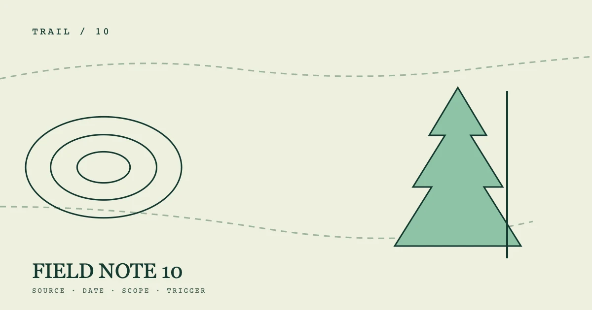

OBSERVATION 10%%P10_EYEBROW%%
%%P10_TITLE%%
%%P10_SUMMARY%%- 编写
- %%AUTHOR_NAME%%
- 发布
- 复核
展开路线标记
%%P10_SECTION_LABEL_1%%
%%P10_H2_1%%
%%P10_BODY_1_A%%
- %%P10_MODULE_1%%
%%P10_MODULE_5%%
%%P10_MODULE_9%%
- %%P10_MODULE_2%%
%%P10_MODULE_6%%
%%P10_MODULE_10%%
- %%P10_MODULE_3%%
%%P10_MODULE_7%%
%%P10_MODULE_11%%
- %%P10_MODULE_4%%
%%P10_MODULE_8%%
%%P10_MODULE_12%%
%%P10_BODY_1_B%%
%%P10_SECTION_LABEL_2%%
%%P10_H2_2%%
%%P10_BODY_2_A%%
%%P10_BODY_2_B%%
%%P10_SECTION_LABEL_3%%
%%P10_H2_3%%
%%P10_BODY_3_A%%
%%P10_BODY_3_B%%
%%P10_SECTION_LABEL_4%%
%%P10_H2_4%%
%%P10_BODY_4_A%%
%%P10_BODY_4_B%%
%%P10_FAQ_TITLE%%
%%P10_FAQ_Q_1%%
%%P10_FAQ_A_1%%
%%P10_FAQ_Q_2%%
%%P10_FAQ_A_2%%